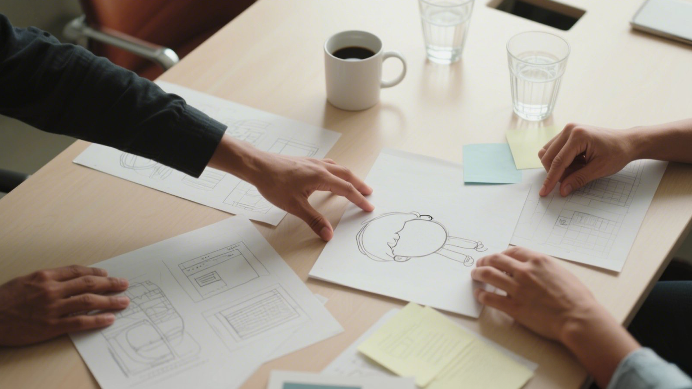
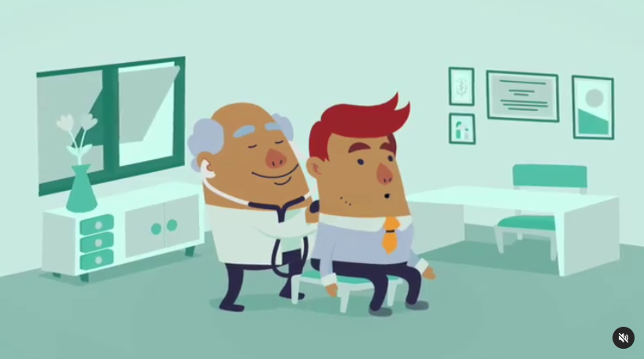

Por que Gaja?
A expressão "Gaja" tem origem no sânscrito e é a base para a palavra "elefante". Na cultura indiana, o elefante simboliza sabedoria, força, estabilidade e prosperidade.
Na Gaja Design , nos inspiramos nesses atributos para oferecer uma consultoria sólida, estratégica e confiável para o desenvolvimento de marcas.
Assim como o elefante, que é um símbolo de memória e inteligência, nossa abordagem é cuidadosa e baseada em um profundo entendimento do mercado e do propósito de cada cliente. Nossa missão é ajudar marcas a se tornarem fortes, resilientes e memoráveis, guiando-as por um caminho estruturado e eficaz rumo ao sucesso.
Quem somos?
Na Gaja Design, acreditamos que uma marca forte nasce da combinação entre boa estratégia e identidade autêntica. Somos uma consultoria especializada em branding e design, com ampla experiência na criação de conteúdo visual impactante e significativo. Nosso foco é entender profundamente a realidade de cada cliente para construir plataformas de marca que estejam alinhadas ao seus propósitos e sucesso.
O que resolvemos?

Empresas de pequeno e médio porte muitas vezes enfrentam dificuldades em estruturar o seu papel e comunicação de marca de forma coerente e impactante. Falta de clareza na visão do negócio, identidade visual desalinhada com os valores da empresa e dificuldade em se posicionar no mercado são desafios frequentes.
Na Gaja Design, ajudamos a transformar a proposta da sua marca em uma experiência sólida e atrativa, tornando sua presença mais consistente e memorável para o público certo.
Nossa metodologia

Trabalhamos em um processo estruturado para garantir que sua marca seja bem planejada e bem executada. Conheça abaixo as epapas gerais do nosso processo:
BUSINESS
1 . Definição de Negócio
Ajudamos você a estruturar um modelo de negócio claro, com propósito, diferenciais competitivos e posicionamento estratégico. Essa base sólida sustenta o crescimento da sua marca desde o início, conectando sua proposta de valor ao mercado de forma viável e consistente.
BRANDING
2 . Criação da Plataforma de Marca
A partir de uma imersão no seu mercado, desenvolvemos a base estratégica da marca: visão, missão, valores e posicionamento. Criamos um norte claro e relevante para orientar decisões, fortalecer sua presença e gerar conexão real com o público que você deseja alcançar.
BRANDING
3 . Materiais e Recursos Personalizados
Criamos os elementos visuais e verbais da sua marca — identidade visual, identidade verbal e guias de uso. Definimos tom de voz, storytelling e estilo de comunicação para garantir autenticidade e consistência de posicionamento em todos os canais e pontos de contato com o público.
MARKETING
4 . Fornecimento de Insumos para Marketing
Entregamos os recursos essenciais para que você comunique sua marca com autonomia. Com isso, sugerimos canais, formatos e ações estratégicas de marketing iniciais para ativar sua presença no mercado, usando todo o potencial da identidade construída em cada etapa anterior.
Nossos diferenciais
Unimos estratégia e design para criar marcas autênticas, feitas sob medida, com processos colaborativos e foco real em impacto e conexão com o público certo.
Veja a seguir os pontos que são prioridade para nós:
Experiência Visual
e Estratégica
Nossa expertise em design vai muito além da estética – entendemos como criar uma identidade que realmente funcione no mercado.
Processo Consultivo
e Colaborativo
Trabalhamos junto com você para que a marca represente sua verdadeira essência e intenção.